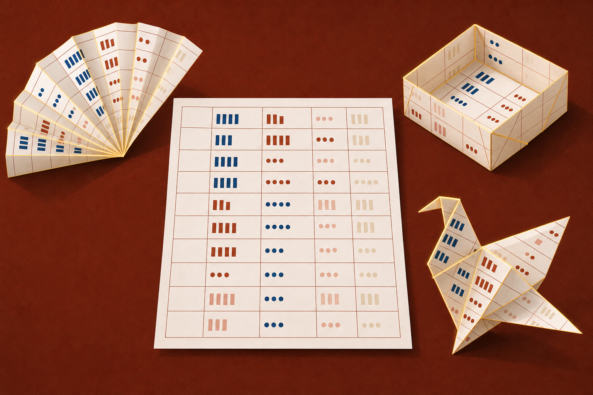
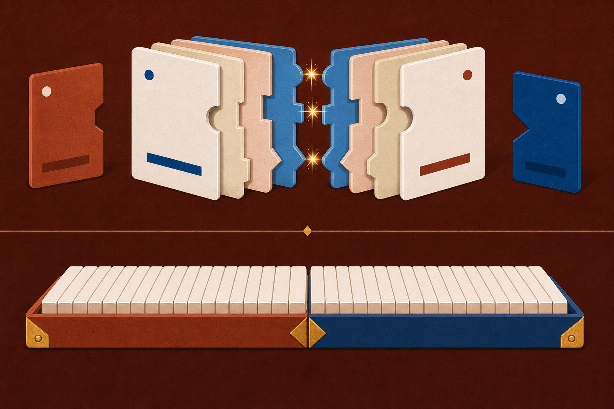
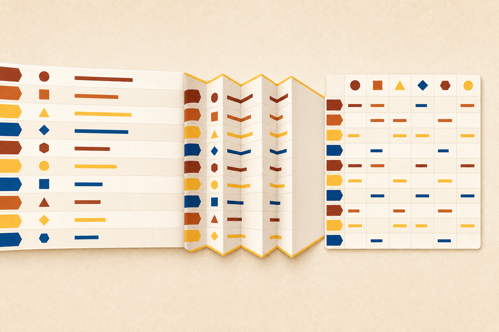

sort · rankChapter 8
Change the shape. Keep the meaning.
Order, summarize, connect, and reshape DataFrames.
Opening question: Which table move would make your next answer easier?

Order, summarize, connect, and reshape DataFrames.
Opening question: Which table move would make your next answer easier?
sort · rankpivot · crosstabmerge · concatmelt · pivotby=['region', 'revenue']ascending=[True, False]Laptop $45,000
Monitor $18,000
Mouse $2,300
Laptop $38,000
Mouse $1,800
921.5
921.5
883
921
921
883
921
921
882
A rank is a result plus a policy.
Place the highest revenue row first.
Keep row order and add performance standing.
productcolumnsregionvaluesrevenueaggfuncsum| East | West | |
|---|---|---|
| Keyboard | NaN | 155 |
| Laptop | 2300 | NaN |
| Mouse | 55 | NaN |
fill_value=0 replaces absence in the result, not the source.No observed Keyboard-East pair
Report displays zero revenue
Confirm that zero is a valid interpretation before filling.
| Product | sum | count | ||
|---|---|---|---|---|
| East | West | East | West | |
| Keyboard | 0 | 155 | 0 | 2 |
| Laptop | 2300 | 0 | 2 | 0 |
| Mouse | 55 | 0 | 2 | 0 |
Sum asks how much. Count asks how often.
Total revenue for each product-region pair
Number of rows for each product-region pair
| Product | East | North | South | West |
|---|---|---|---|---|
| Laptop | $19,250 | $28,850 | $35,750 | $59,949 |
| Monitor | $13,500 | $8,450 | $14,910 | $22,469 |
| Keyboard | $3,750 | $1,470 | $4,560 | $5,009 |
| Mouse | $1,939 | $755 | $1,085 | $3,194 |
101 Lucia
102 Kai
103 Imani
104 Tariq
on='customer_id'101 Laptop
103 Mouse
101 Keyboard
105 Monitor
101 · Lucia · Laptop
101 · Lucia · Keyboard
103 · Imani · Mouse
matches only
all customers
all purchases
everything
Audit key uniqueness before and after every merge.
Match shared values
Stack compatible schemas

melt() turns repeated columns into observations.| date | New York | Los Angeles | Chicago |
|---|---|---|---|
| Jan 15 | 32 | 68 | 25 |
| Jan 16 | 28 | 72 | 22 |
melt2 × 4 → 6 × 3| date | city | temp |
|---|---|---|
| Jan 15 | New York | 32 |
| Jan 16 | New York | 28 |
| Jan 15 | Los Angeles | 68 |
| Jan 16 | Los Angeles | 72 |
| Jan 15 | Chicago | 25 |
| Jan 16 | Chicago | 22 |
df.melt( id_vars=['date'], var_name='city', value_name='temperature' )
Jan 15 · New York · 32
Jan 15 · Los Angeles · 68
Jan 15 · Chicago · 25
pivot() fails where pivot_table() aggregates.Jan 15 · Phoenix · 70
Jan 15 · Phoenix · 74
No aggregation policy
Declared rollup
wide sales rows
West · Laptop · #1
four quarters become observations
weak association, not prediction
West totals $1,065,201. Repeated product ratings need interpretation.
Exit ticket: Choose one Skills Lab step. Name the table change, the pandas operation, and the check that would catch a wrong result.
Change the structure. Prove the meaning survived.
